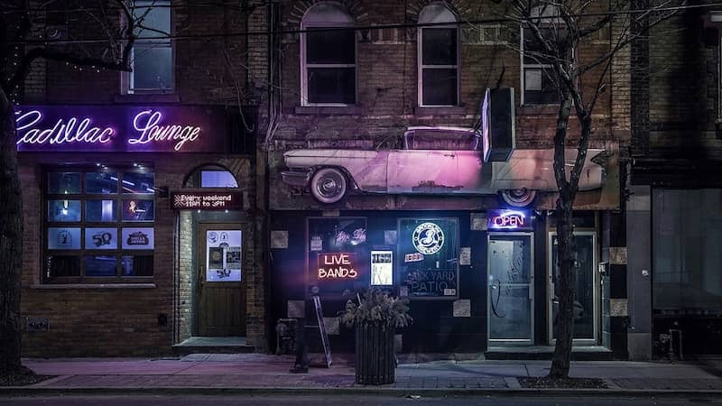

Winter is only my favorite season when I’m safe indoors; frosty vignettes on big bay windows; thick socks and oversized sweaters encapsulate my toes and shoulders; the heat from my mug warms my hands and emits a steam that hugs my runny nose.
Winter is only my favorite season, when I’m safe in love; someone to shiver with in the car, clutching each other’s hands while we wait for the engine to warm up; someone to put my towel in the dryer when she hears me hop in the shower after I’ve stripped off my snow-shoveling clothes; someone to braid my hair while I peruse my basic cable for Nightmare Before Christmas (we were both pretty sure it was on channel 34 but found it 12 channels and two French braids later).
Winter was always my favorite season, until she froze me over.
I met her at a bar when I was 24-years-old.
Gin and tonic.
She’s at a table with her friends, three guys.
All pretty flamboyant.
Another drink.
It’s been about fifteen minutes since I last glanced back to see her.
I’ve resolved to stop looking like a lonely stalker.
Then she laughs.
So I grow some balls and get up from the bar stool.
Hold on, shot of fireball.
Bigger balls.
Walk toward her table but chicken out.
No balls.
Never mind.
Fuck I look stupid.
Go to the bathroom, Steph.
Okay, so I go to the bathroom.
I look sober but I feel like a drunken idiot.
I need to re-do this ponytail.
Why is my hair even up? I look like an uptight bitch.
If I take it out is she going to notice?
That’d be worse than looking like I just left the gym.
Then she’d be onto me being into her.
I have no clue if she’d be into being onto me.
I’m taking my hair out.
I threw everything associated with her out, even the shampoo that we shared – well I kept the conditioner, but it’s not like she used it; her hair was so short. Utterly black and coarse like tulle, tufts of bangs sprouted from her forehead. I’d always brush them aside in the morning to venture into her hazel eyes. I feel like it’s a common comparison to say eyes are like the universe, but hers were like a forest; a mixture of earth tones like greens and browns. If you lie amidst the trees and look up, the light shines through the canopy of leaves in such a way that almost does justice to the iridescence in her eyes.
She’s looking at me, I know it.
I should’ve kept my hair up.
She knows.
Another.
Why’d I even come to the bar by myself?
Oh yeah, because my friends chose the ex over me.
The bartender keeps staring at my boobs, Christ.
This guy’s a beef-head.
Bum night. I just want to close my tab.
I’m not even tipping this guy.
He probably drugged me, whatever.
Some buxom blonde plants herself on the stool next to me.
Compliments my hair.
Asks about my day.
Offers to buy me a drink.
She seems sweet, and she’s stunning.
Deny offer.
I walk out and try to light a cigarette.
I barely smoke, whatever.
Lighter’s out of fluid: click, click, nothing, shake, click, nothing.
Fuego?
Turn around, and there she is holding out a lighter…
Last thing I expected. But ok. Baby balls?
…With a pickle design printed on it.
Cute.
Assuming that means she likes pickles.
Wait, what? Fuck I was a cynical.
Who makes their lighter purchase specifically to advertise their sexual preference?
“Thanks…”
Winter.
“What?”
Ha, that’s my name.
“Your name is Winter?”
Yeah, I like ‘Winnie’ better though. You?
“I like ‘Winnie’ better, too.”
No, your name…
“Oh! Steph. So you like pickles?” – word vomit.
She giggles at both my question and the agony on my face for having asked it.
Only the kind that are green and come in a jar.
At least my apartment wouldn’t smell like weed anymore. She’d store some in my dresser for when she was over; I found a few nugs in the cat’s staple food bag once, whoever knows how they got there. It was one of those big ones from PetSmart that you buy to last you through the next ice age; I’ve been scooping away at the supply for what feels like a century.
Passing a joint, we’d lie on the floor of my apartment on Sunday afternoons in our t-shirts and underwear like something you’d see in a music video: stereotypical lesbian-movie couple, bring in the Arctic Monkeys. We’d have what I thought at the time was deep conversation, but to her it was just high-talk.
“Do you ever feel like something is totally bothering you, and you wish you knew what it was, but you sort of do and you’re just like unconsciously pretending that you don’t?”
What’s bothering you?
“My mind knows but it won’t tell me.”
Then how do you know?
“Instincts.”
Thirsty?
“No.”
Hungry?
“I’m not talking about a lack of basic human necessity that a dry mouth or grumbling stomach will tell me. Not those kind of instincts.”
What kinds then?
“The ones you don’t know about. The ones you haven’t the slightest clue about but you know somehow they’re there. ‘Cause if they weren’t, where would this thought I’m having even come from?”
What’s the matter Steph? Why’re you getting all mysterious on me? Lighten up.
“I don’t know I just feel like there’s all types of things that I should talk about and I just can’t.”
Tell me then, tell me a story.
So I told her about my mom and my dad. I told her about how they kicked me out when I was seventeen-years-old because they found out I liked girls. I told her about the long three years of silence between us until they finally accepted I wasn’t going to change where I liked putting my mouth. I told her about how my brother would have his friends sleep over, and that they spied on me changing when I was only fourteen-years-old. I told her that his science partner Jimmy actually came into my room one of those nights and stuck his fingers in my underwear when I had pretended to be asleep, and that I told my parents but they brushed it off as normal “guy stuff.” I told her about how he did it five times after that. I told her about my hamster Charlie I had when I was six-years old, and that he never let me hold him, so one day I got so angry I snatched him out of his cage and squeezed him a little too hard. I told her about how when I was four-years old the priest at our church told me God wouldn’t love me if I didn’t sing loud enough for him to hear. I told her about how every girl I’ve ever been with has taken me for granted.
Mm.
“That’s all you have to say?”
What do you want me to say? You’re being ‘bad vibes.’ Can’t we just have fun?
“Don’t we always ‘just have fun.’ Do you even take me seriously?”
Why’re you talking like this?
“I don’t know, Winnie. Probs the weed.”
She sits up, looking at me with her squinty, glassy eyes, and pouts with her bottom lip curling outward at me.
“Why the face?”
She mocks me in a nasally voice.
I dyan’t knyaow Winnie. Prabs tha wee-eed.
She explodes in laughter, shoots up from the rug like a missile, and let’s herself crash on top of me.
Making fun of me was always something she was good at. I miss those little digs she’d squeeze in. She was good at filling in the spaces – gaps in conversation, the empty drawers in my dresser with her spare clothes, the fish bowl when Goldie would belly up. She didn’t think I’d notice, but she actually replaced him two times that I’m sure of. I’d humor her by making little comments: “Goldie looks a little bigger today, maybe I’m over-feeding him.”
For my birthday she snagged me a booklet of lottery tickets and a bottle of Jim Beam. We scratched the tickets furiously with sticky pennies and when we lost all of them except for two ($5 total were the fruits of our labor), we drowned our poverty-stricken sorrows in whiskey. Since we couldn’t afford to get into any glamorous shenanigans that weekend to celebrate, we walked the river and smoked a filtered joint. Every time we saw a daisy she’s snatch it up and present it like it was the royal scepter: I picked this for you, milady.
For Fourth of July, Winter and I took a bunch of IPAs and laid out a blanket on a hill near the local high school to watch the fireworks. I forgot to bring the bottle opener; I could picture it sitting in the utensil drawer mixed in with the assortment of plastic knives and sporks I’d pocket from fast-food restaurants so I wouldn’t have to do as many dishes. In its absence, Winter brought out her lighter and showed me a trick to get the caps off. Apparently the lighter had to be positioned in this very specific way in order to get the right leverage, and after three failures I decided I didn’t have the knack for it. Plus, why would I need to learn if she’d always be around with her handy technique.
For Thanksgiving, we ordered out from Boston Market and snagged a box of wine. We took all the food out of the plastic containers and set it up on my dining room table, lit candles, and used real silverware and the good china, Winter called it. Before we ate, she insisted we say what we were thankful for. She began:
I am thankful for this chicken that has been rotisserie-d.
For the good china.
For the dishwasher.
I’m thankful for my homie Steph.
‘Cause she’s always there for me.
a—and, for dessert.
Which is also Steph.
Winks, laughs, launches a spoonful of mashed potatoes at me.
So desert came and went and we passed out at 9 p.m.
And so it was finally winter; snow layered the ground, frosted the windows, iced-over the roads. We’d gotten to Wawa after driving four miles per hour so Winnie could get a hot chocolate. I asked her if she liked winter, “like, the season.” She said no because it stole her thunder, and how dare winter try to show her up like that. Mother nature’s got nothing on me. I chuckled like I usually did at her sassy remarks, and she smiled mischievously at me like she always did after delivering. I followed up my first question by inviting her to my family’s for dinner. She was really troubled by that, I remember her face twisting up into a reluctant grimace and her standing outside my passenger door craning her neck into the car.
I’d rather not.
Blank stare.
I don’t think so, Steph.
“Well—”
Why would I do that?
This time it’s her face that has the blank stare.
“Maybe because we’ve been fucking for six months.”
What’s that have to do with literally anything, Steph.
I feel like I’m choking up, like my neck is swelling.
My body goes into high alert.
Like a bunch of bells and whistles and sirens screeching in my head.
That familiar wave of rejection engulfs me.
Swallows me whole in its heat.
This isn’t something I’m supposed to feel with her.
This isn’t what this is. This isn’t what this is supposed to be.
What? “What is this supposed to be?”
It’s supposed to be nothing. It’s supposed to be whatever it wants to be.
“You’re the one specifying it’s supposed to be something at all.”
No you are, by asking me to come to your family thing.
“Why wouldn’t I?”
But why would you?
She slams the car door.
I feel like we’re at the furthest corners of the universe from each other.
All alone on my side.
All alone in my Hyundai, my stupid vehicular bubble.
She storms into the Wawa.
And I scream at the top of my lungs.
This girl comes into my life one night at a bar where I’m soaking up my despair for the three months after my last break-up, and gives me a certain happiness I’ve never felt before and a hope that this was the one, this time was different, only to rip that happiness and that hope right out from under me. Winnie approached me at the bar; she sparked a fire in me, only to douse it. I texted her two days later to say sorry and that I should’ve known she wouldn’t want to come to some “corny dinner, my bad. my parents asked me to bring some1, i shouldnt have let them pressure me.” Her response: “its cool homie. wanna go ride bikes or something?” We didn’t talk about it again, and for the next week and through the holiday we went on as we normally did, even though it squeezed my insides into knots, burning like brimstone.
So who’s the ex and why’d she leave? Rachel. Grade A bitch. Queen of melodrama. She wasn’t your typical looking-lesbian, either. She was hot. Like, really hot. She had long brunette hair always set in soft, loose curls. Her skin was smooth like she lathered herself in butter, smooth and incredibly tan (a good olive tan, too, not that orange spray shit). Her waist was my favorite thing about her, cinched like a corset that swooped outward into hips you could place a glass of water on (at least they seemed that way in comparison to mine – I’m built like a box, like a twelve-year-old boy with a box for a torso). She woke up an hour earlier than she had to before work each morning to perfect her hair and makeup. She wore dresses and skirts, push-up bras and thongs. I don’t even remember the last time I wore a bra. Naturally, when we’d go out together, guys were always all over her, assuming that I was just the ugly best friend. Rach would try so hard to dress me up, take out your ponytail, don’t wear those jogger pants, put this blouse on, try this lipstick et cetera, et cetera. I’d get pretty pissed off because, not only was she trying to change me, but she thought that picking up guys at the bar was some kind of game and she wanted me to join her.
So I’d say the break-up was entirely her fault.
I’d rather sit at a dive-bar and order some beers.
Grab some quesadillas.
But no, I’m sitting here at ‘Rumor.’
I hate coming out to places like this.
12:58am. Great. This place is open for another hour.
When Rachel drags me out like this, she’s never ready to leave until last call.
I haven’t even seen her in like 20 minutes.
Force a conversation with the bartender.
He’s trying to hit on me. Why.
Where’s your boyfriend?
“I’m gay.”
Oh.
Yeah I’m not in the mood for that right now.
I’m ready to leave.
Rachel pulls this shit all the time.
She forces me to come to these clubs filled with a bunch of horny men.
Disappears for four hours, and comes back sweaty.
Fresh off the dance floor.
The ‘DJ,’ if that’s what you want to call him, is blasting some basic dance music.
I’m going to find her.
Check the bathroom.
Nope.
Walk the entire floor; wince each time the strobe flashes.
Thump thump thump –
Cool music bro let’s bump our fists, yeah bro.
Someone just grabbed my ass.
Nope.
Maybe I’ll bum a smoke.
Never mind, Rachel would kill me.
The last time she saw me taking a drag she started crying.
Actually yeah, I need a fucking cigarette.
Rachel and I dated for two years, and this is what it came down to: a break-up that left me girlfriendless, friendless, depressed, and full of ugly anger. I thought for a long time about moving to a different state, and starting my life completely over. I probably should have. Scratch that – I definitely should have.
I can hear the repetitive thump thump thumps even from outside.
And there she is.
Wearing some guy’s jacket.
Leaning up against the brick wall.
She’s trashed.
She can’t even keep both of her eyes open at the same time.
His palms are pressed to the wall, arms caging her there.
Call her name.
No response.
March over.
Spit out, “You cold Rachel?”
He tells me to fuck off.
“That’s my girlfriend, asshole.”
Not tonight.
Grab her, rip the jacket off.
This dirtbag is approaching me, so I elbow him in his chest.
She’s really cursing at me.
How is she pissed at me right now?
I’m the one that’s allowed to be pissed.
She slurs: Boring dyke.
I yank her away.
She fights to free her wrist.
“You want to go? Fine.”
Launch her toward the wall.
She smacks her skull on the brick.
Out cold.
She told everyone I attacked her. She told everyone I was a fucking violent craze-o. She told everyone she wasn’t doing anything wrong. All of our mutual friends shunned me. They stopped answering my calls. They DeFriended me on Facebook. I actually saw Emily in ShopRite a handful of times, and she made every effort to stay as far away from me as possible. When we did lock eyes, she gave me an injuring look of disgust. When I first saw Winter in the bar, I thought twice about her because she was there with three guy friends. But like I said before, they were pretty gay-looking. Well, non-threatening. I’m not even really that jealous of a person, I don’t think. I just didn’t want a repeat of Rachel-the-lesbian-who’s-not-really-a-lesbian show.
Rachel pushed me to my limit. There she was wearing some sketchy man’s jacket, pinned up against a sketchy wall at one in the morning outside of some sketchy bar that the sketchy wall belonged to, looking like she had just washed down ten sketchy drinks. So she got a restraining order. Our friends chose her over me. And that was it. After two years.
The ball drops in ten minutes.
It took us only about five to drive here.
Winter insisted we drive.
Happy New Year.
She tells me that she comes to this spot every year.
She loves to listen to the faint echo of pots and pans clanging.
She says the sounds bounce off the buildings and stretch across the water.
The moon’s shrouded and a haze rests in the air, I can barely see the water below.
But I can still see the city lights from across the way.
There are no cars on this bridge, all is quiet.
I can hear her breathing, her breaths visible in the air.
Five minutes.
She looks at me: This is probably my favorite holiday.
“Why?”
Because, you get to like, start over. Everything is new.
“Everything is pretty much the same, I think.”
No, it’s like a whole new, clean slate lies ahead of you.
A clean slate sounds nice.
Three minutes.
She lights up a cigarette, the flame casting shadows on her face.
The smoke loops around us as we sit, loops and coils.
Fuego.
I take a swig of Jameson, which I wrapped in a paper bag.
It burns as it slides down my throat.
Two minutes.
Come on stand up here. It’s almost time to listen!
She’s perched on the ledge, reaches her hand down.
I hoist up.
A cold wind sends a shiver down my spine.
This is the best part. It’s so dead silent before it strikes twelve.
One minute.
We don’t speak, we barely move.
I just let the heaviness of the complete absence of sound weigh on me.
The air seems lifeless.
But she, she is so alive.
She’s bright, she’s right there in front of me -
All I want in the world.
Then I drop the ball, and tell her I love her.
She looks at me.
Can you not right now?
“Can I not what?”
Be so complicated and serious.
“But I do and I mean it.”
Well I don’t love you Steph. I don’t want to love you, or anyone. You’re fucked up. I thought I made it clear, like, I’m not in this forever. You’re always trying to push for something more.
I feel the blood in my veins freeze.
And then the banging and the clanging rang through the air.
Midnight.
I woke up on New Year’s Day and that morning my apartment felt colder than normal. Obviously Winter wasn’t next to me when I crawled out of my slumber, and half of me expected to see her sleeping on the couch where I frequently found her the next morning after a drunken fight. The other half of me knew I’d never find her there again.
The next three nights I spent at the bar where I met her, thinking maybe I’d see her there. But then they found her body washed up on the river’s shore, and three days after that they picked me up.
They say I choked her. They say I put my hands around her throat and must have squeezed until the iridescence was shaken right out of her. The forest of her eyes must have become like the universe then; vast, empty, lifeless. Winter melted away. When I let go I let her fall back, off the bridge and into the river. I sat on the ledge and thought of letting myself fall.
Finish the bottle of Jameson.
Grow some balls.
Leaning a little forward now, glancing down into the fog below.
Can’t see her. Can’t even see the water.
No balls.
The banging and the clanging probably started dying down. I don’t remember. And when all was silent again, I got into my car and drove the five minutes home drunk.
And before I went to sleep, I flushed ‘Goldie the Third’ down the toilet.